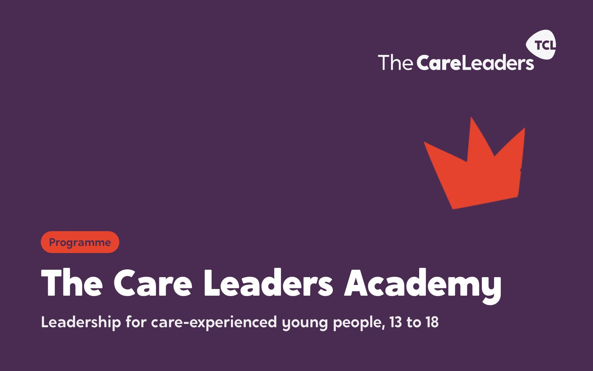
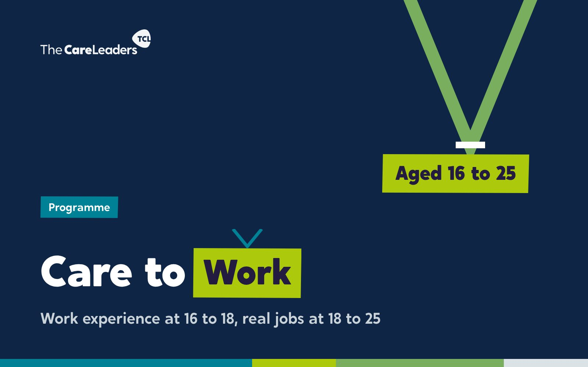
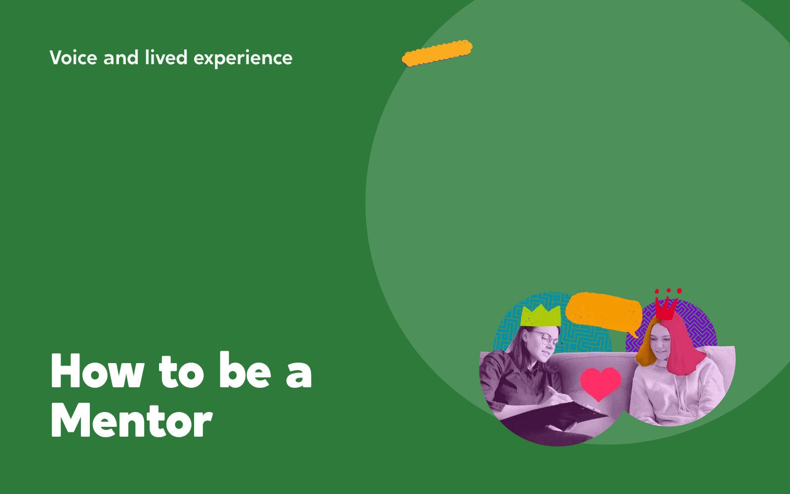

Programmes that leave your people able to carry on without us
Programmes run over weeks or months, not a single day. Each is commissioned for a group or a whole area. Every one ends with trained people, finished products and materials you keep.
Choose a programme
Each page has the full breakdown: what we offer, what we do, what you get, how it works and what it costs to commission.
 Designated Leaders ProgrammeDesignated teachers become designated leaders. Nine practical tools chosen from your schools’ own audit, and the skills to train their whole staff.See the programme →
Designated Leaders ProgrammeDesignated teachers become designated leaders. Nine practical tools chosen from your schools’ own audit, and the skills to train their whole staff.See the programme →
The Care Leaders AcademyCare-experienced young people aged 13 to 18 build leadership skills, then lead a live task inside your council.See the programme →
Care to WorkWork experience at 16 to 18 and ring-fenced jobs at 18 to 25, starting inside your council.See the programme → The FellowshipEntrepreneurial leadership for anyone over 18 with an idea, project or business that solves problems for care-experienced people.See the programme →The Journey Through CareOne child’s story from before birth to leaving care at 18, paired session by session with the theory behind it and the tools that help.See the programme →NVR AdvancedUp to 12 team leaders and managers learn to coach colleagues in non-violent resistance and train their own teams, so NVR stays after we leave.See the programme →
The FellowshipEntrepreneurial leadership for anyone over 18 with an idea, project or business that solves problems for care-experienced people.See the programme →The Journey Through CareOne child’s story from before birth to leaving care at 18, paired session by session with the theory behind it and the tools that help.See the programme →NVR AdvancedUp to 12 team leaders and managers learn to coach colleagues in non-violent resistance and train their own teams, so NVR stays after we leave.See the programme →
How to be a MentorCare-experienced adults learn to build trust, share their story safely and set goals with a child in care.See the programme → Story, Theory, Action: The Facilitator ProgrammeLearn the method behind every Care Leaders course and build and run your own sessions about children’s lives.See the programme →
Story, Theory, Action: The Facilitator ProgrammeLearn the method behind every Care Leaders course and build and run your own sessions about children’s lives.See the programme →What every programme has in common
Built from your audit
We start with what your staff, your young people and your data tell us, not with what is on the shelf. Every programme opens with an audit and is shaped by what it finds.
Story, theory, action
Every programme is built from the same three elements. A real story opens each session, from lived experience and professional experience. The theory underneath gives it rigour. Then action: tools people use the next day.
Your people become assets
We upskill the people you already have so they carry the work on. Designated teachers learn to train their staff. Managers learn to coach colleagues through NVR. Young people learn to speak, co-design, train professionals and sit on panels.
Yours to keep
Every workbook, slide deck and toolkit is co-designed with you and handed over.
Not sure which one?
Tell us what you need to change and we will say which programme fits, or whether consultancy or a single course would serve you better.